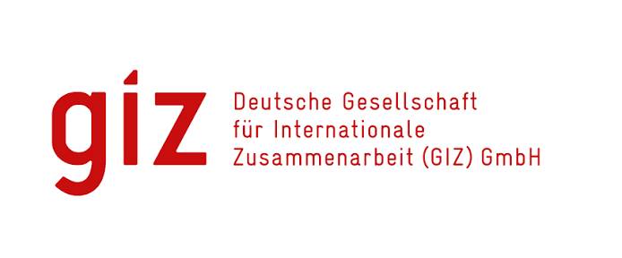
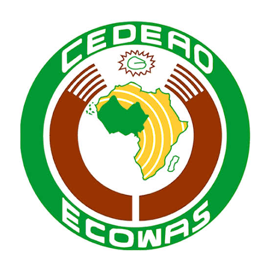
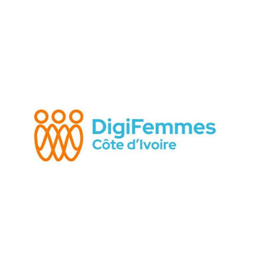

Systèmes & collaboration
Microsoft 365 SharePoint Teams Forms Lists
Disponible pour de nouvelles opportunités
Systèmes d'information | Communication | Transformation digitale
Je mobilise le numérique, l'analyse des besoins et la communication pour rendre les organisations plus efficaces et leurs outils plus utiles.
Profil
Jeune professionnelle en systèmes d'information, communication et transformation digitale, je m'intéresse aux usages concrets du numérique dans les organisations.
Mon parcours combine accompagnement des utilisateurs, gestion d'outils collaboratifs, communication institutionnelle et coordination d'activités. J'aime transformer un besoin en une solution claire, accessible et adaptée au terrain.
Aujourd'hui stagiaire IT à la GIZ, je contribue à l'amélioration des outils numériques et à l'efficacité opérationnelle des équipes.
Savoir-faire
Microsoft 365 SharePoint Teams Forms Lists
Canva Microsoft Designer PowerPoint Publisher Captation photo
HTML CSS JavaScript Bootstrap Vue.js Figma
Power BI Excel UML Merise Data science — bases
Golang Git Cisco Packet Tracer Blender 3D Montage vidéo avec Canva et CapCut
Expérience
À la GIZ, participation à l'amélioration des outils numériques, analyse des besoins utilisateurs et accompagnement des équipes dans l'usage de Microsoft 365 et SharePoint.
À la CEDEAO, conception d'affiches, de visuels et de supports de communication, ainsi que participation à la couverture médiatique d'activités institutionnelles.
Gestion du parc informatique, assistance aux utilisateurs et appui technique et logistique lors de réunions et d'événements institutionnels.
Participation à la revue de presse en français et en anglais, rédaction de rapports, courriers et documents administratifs.
Parcours professionnel
Des expériences complémentaires à l'intersection du support informatique, de la communication institutionnelle et de la transformation digitale.

Deutsche Gesellschaft für Internationale Zusammenarbeit (GIZ) GmbH
Abidjan, Côte d’Ivoire
J’accompagne les équipes dans l’évolution de leurs outils et usages numériques afin de soutenir l’efficacité opérationnelle.

Communauté économique des États de l’Afrique de l’Ouest
Abidjan, Côte d’Ivoire
Une expérience transversale alliant gestion des équipements IT, assistance aux utilisateurs et communication institutionnelle.

DigiFemmes Academy, Abidjan
Formation professionnalisante
Consolidation des fondamentaux du développement web, du cloud et des pratiques DevOps.
Université polytechnique de Bingerville
Diplôme de licence
Contact
Vous avez un projet, une opportunité ou souhaitez échanger sur la transformation digitale ? Écrivez-moi.